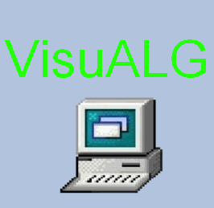

VisualG
Olá mundo, eu sou o Guilherme José!
Eu gosto de programar!
Desenvolvido em:
Delphi
Assembly
C++
Ajustes do Professor/Aluno
Cor
Aparência
Fontes
Nome
Nome da Discplina
Nome do Professor da Escola
VisuAlG

VisuALG
VisuALG
VisuALG
VisuALG
VisualG